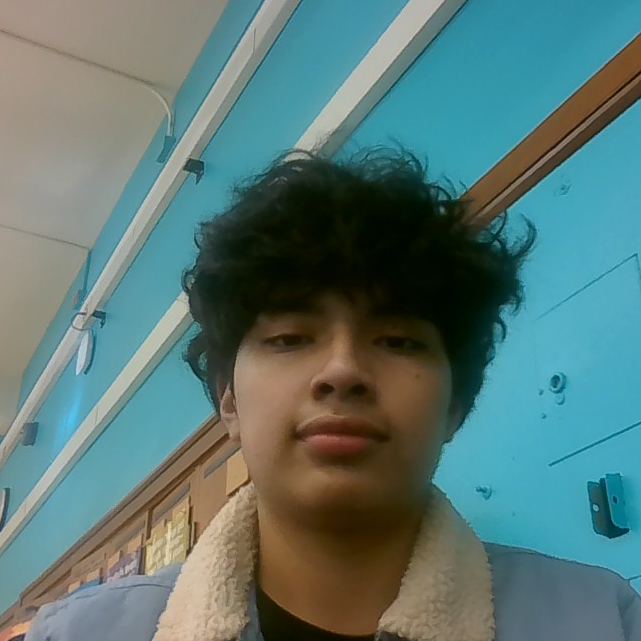

Emmanuel Cornejo
My name is Emmanuel, which means "God with us". I like to read books and don't like art. I am a visual learner and like to work in a group rather than by myself. I come from a Mexican family alongside 2 siblings. I went to school on the Northside at Hayt elementary. Only have great memories at that school. Unfortunately only 2 people came to Lane which wasn't pleasing at the time but as I met new people it was clear that it wasn't as bad. I have 3 cousins that previously went here which is what inspired me to chase my academic pursuit here at Lane. The transition from middle school to high school is difficult for some but not really for me thankfully.
Sports
Soccer is my favorite hobby because I like staying active. I find it exciting and challenging. Whether I'm playing with friends or practicing on my own, soccer always helps me improve my skills.